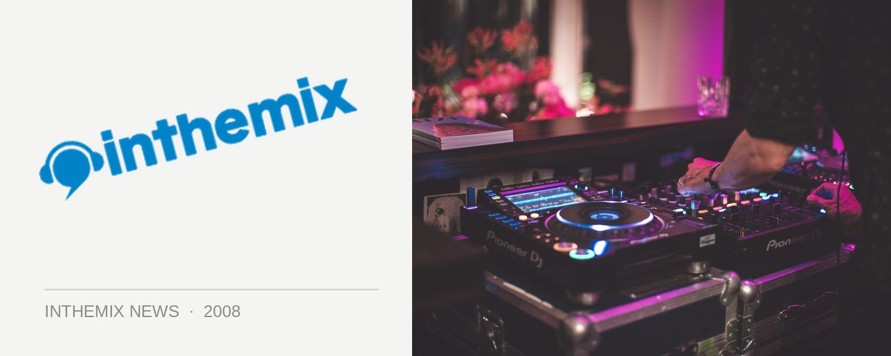

Nic Fanciulli steps it up for ITM Members BBQ this Saturday
Nic Fanciulli fans, sit up and take notice. The next installment of the ITM members BBQ is almost upon us, and it’s been revealed that in addition to the exclusive set he’ll be playing for a select bunch of ITMers earlier in the Sandbar, it’s now confirmed that when he hits the Cave later on at midnight he’ll be playing a massive four-hour set! That certainly is one massive dose of Nic Fanciulli.
RSVPs are now closed, but for those who are planning on heading along to what will be a very busy night, it’s recommended that you get there early in order to make sure you’re one of the first 150 people through the door. With the music kicking off at 8pm, there’ll be free food aplenty as well as Smirnoff drink offers. For those who aren’t able to make it to the BBQ they’re still be welcome to come and watch Fanciulli play his four-hour headline slot later on, for the special price of $15 before 12am and $20 afterwards. Just mention the ITM promotion at the door.
The weekend is nigh! We’ll see you all there for the ITM Members BBQ from 8pm, as well as Nic Fanciulli’s special four-hour set later on in the Cave.